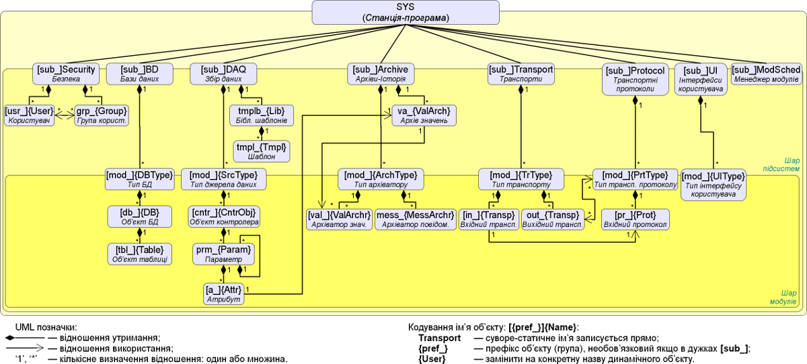

Автор: Роман Савоченко
До початку програмування у OpenSCADA Ви маєте вивчити структуру об'єктів програми (Об'єктна модель) у посібнику по програмі OpenSCADA та на рисунку 1.
 Рис. 1. Користувацька об'єктна модель ядра OpenSCADA.
З цього документу Ви побачите, що можете, як користувач, програмувати наступні частини OpenSCADA:
API користувацького програмування представляє собою дерево об'єктів OpenSCADA (Рис.1), кожний об'єкт якого може надавати власний перелік властивостей та функцій. Властивості та функції об'єктів можуть використовуватися користувачем у процедурах на мовах користувацького програмування OpenSCADA.
На цей час OpenSCADA надає тільки одну мову текстового програмування — JavaLikeCalc, відповідно Ви також повинні її вивчити перед початком. Точкою входу для доступу до об'єктів OpenSCADA (Рис.1) з мови користувацького програмування JavaLikeCalc є зарезервоване слово "SYS", кореневого об'єкту OpenSCADA. Наприклад, для доступу до функції вихідного транспорту треба записати: SYS.Transport.Serial.out_ModBus.messIO(mess);.
API об'єктів, які надаються модулями, описуються у власній документації модулів та тут до неї надаються посилання.
1.1 Елементи мови
Ключові слова: if, else, while, for, break, continue, return, function, using, true, false.
Постійні:
- десяткові: цифри 0-9 (12, 111, 678);
- вісімкові: цифри 0-7 (012, 011, 076);
- шістнадцяткові: цифри 0-9, літери a-f або A-F (0x12, 0XAB);
- реальні: 345.23, 2.1e5, 3.4E-5, 3e6;
- логічні: true, false;
- строкові: "hello", без переходу на наступний рядок однак з підтримкою прямої конкатенації строкових констант.
Типи змінних:
- ціле: -263...263, EVAL_INT(-9223372036854775807);
- реальне: 3.4 * 10308, EVAL_REAL(-1.79E308);
- логічне: false, true, EVAL_BOOL(2);
- рядок: послідовність символів-байтів (0...255) будь якої довжини, обмеженої об'ємом пам'яті та сховищем у БД; EVAL_STR("<EVAL>").
Вбудовані константи: pi = 3.14159265..., e = 2.71828182..., EVAL_BOOL(2), EVAL_INT(-9223372036854775807), EVAL_REAL,EVAL(-1.79E308), EVAL_STR("<EVAL>")
Глобальні атрибути параметрів DAQ (починаючи з підсистеми DAQ та у вигляді {Тип модуля DAQ}.{Об'єкт контролеру}.{Параметр}.{Атрибут}).
Функції та параметри об'єктної моделі OpenSCADA.
1.2 Операції мови
Операції, підтримувані мовою, представлено у таблиці нижче. Пріоритет операцій зменшується зверху донизу. Операції з однаковим пріоритетом входять до однієї групи кольору.
| Символ | Опис |
| () | Виклик функції. |
| {} | Програмні блоки. |
| ++ | Інкремент (пост та пре). |
| -- | Декремент (пост та пре). |
| - | Унарний мінус. |
| ! | Логічне заперечення. |
| ~ | Побітове заперечення. |
| * | Множення. |
| / | Ділення. |
| % | Залишок від цілочисельного ділення. |
| + | Складання |
| - | Віднімання |
| << | Порозрядний зсув ліворуч |
| >> | Порозрядний зсув праворуч |
| > | Більше |
| >= | Більше або дорівнює |
| < | Менше |
| <= | Менше або дорівнює |
| == | Дорівнює |
| != | Не дорівнює |
| | | Порозрядне "АБО" |
| & | Порозрядне "ТАК" |
| ^ | Порозрядне "Виключне АБО" |
| && | Логічне "ТАК" |
| || | Логічне "АБО" |
| ?: | Умовна операція "i=(i<0)?0:i;" |
| = | Привласнення. |
| += | Привласнення із складанням. |
| -= | Привласнення із відніманням. |
| *= | Привласнення із множенням. |
| /= | Привласнення із діленням. |
1.3 Вбудовані функції мови
Віртуальною машиною мови передбачено наступний набір вбудованих функцій загального призначення:
- double max(double x, double x1) — максимальне значення із x та x1;
- double min(double x, double x1) — мінімальне значення із x та x1;
- string typeof(ElTp vl) — тип значення vl;
- string tr(string base) — переклад базового base повідомлення.
Для забезпечення високої швидкості роботи у математичних обчисленнях модуль надає вбудовані математичні функції, які викликаються на рівні команд віртуальної машини:
- double sin(double x) — синус x;
- double cos(double x) — косинус x;
- double tan(double x) — тангенс x;
- double sinh(double x) — синус гіперболічний від x;
- double cosh(double x) — косинус гіперболічний від x;
- double tanh(double x) — тангенс гіперболічний від x;
- double asin(double x) — арксинус від x;
- double acos(double x) — арккосинус від x;
- double atan(double x) — арктангенс від x;
- double rand(double x) — випадкове число від 0 до x;
- double lg(double x) — десятковий логарифм від x;
- double ln(double x) — натуральний логарифм від x;
- double exp(double x) — експонента від x;
- double pow(double x, double x1) — зведення x у степінь x1;
- double sqrt(double x) — корінь квадратний від x;
- double abs(double x) — абсолютне значення від x;
- double sign(double x) — знак числа x;
- double ceil(double x) — округлення числа x до більшого цілого;
- double floor(double x) — округлення числа x до меншого цілого.
1.4 Оператори мови
Загальний перелік операторів мови:
- var — оператор ініціалізації змінної; визначення змінної без привласнення значення резервує її зі значенням EVAL, що дозволяє здійснити одноразову ініціалізацію складних типів даних на кшталт об'єкту, через перевірку на "isEVal()";
- if — оператор умови "ЯКЩО";
- else — оператор умови "ІНАКШЕ";
- while — визначення циклу "ПОКИ";
- for — визначення циклу "ДЛЯ";
- in — роздільник циклу "ДЛЯ" для перебору властивостей об'єкту;
- break — переривання виконання циклу;
- continue — продовжити виконання циклу з початку;
- function — визначення внутрішньої функції;
- using — дозволяє встановити простір видимості зовнішніх функцій часто використовної бібліотеки (using Special.FLibSYS;) для наступного звернення тільки за назвою функції, не має ефекту для об'єктного доступу;
- return — переривання функції та повернення результату, який копіюється до атрибуту із ознакою повернення (return 123;); в середині внутрішньої функції здійснюється її завершення з визначеним результатом;
- new — створення об'єкту, реалізовано для: загальний об'єкт "Object", масив "Array" та регулярні вирази "RegExp";
- delete — видалення/звільнення об'єкту або його властивостей, при цьому: внутрішні змінні встановлюються у EVAL, зовнішні замінюються порожнім об'єктом, а властивості об'єкту очищуються.
1.4.1 Умовні оператори
Мовою підтримуються два типи умов. Перший — це операції умови для використання всередині виразу, другий — глобальний, заснований на умовних операторах.
Умова всередині виразу будується на операціях '?' та ':'. У якості прикладу можна записати наступний практичний вираз:
st_open = (pos >= 100) ? true : false;
Що читається як — якщо змінна pos більша або дорівнює 100, тоді змінній st_open привласнюється значення true, інакше — false.
Глобальна умова будується на основі умовних операторів "if" та "else". У якості прикладу можна привести той-же вираз, але записаний у інший спосіб:
if(pos > 100) st_open = true; else st_open = false;
1.4.2 Цикли
Підтримується три типи циклів: while, for та for-in. Синтаксис циклів відповідає мовам програмування: C++, Java та JavaScript.
Цикл while, загалом, записується наступним чином: while({умова}) {тіло циклу};
Цикл for записується наступним чином: for({пре-ініціаліз};{умова};{пост-обчислення}) {тіло циклу};
Цикл for-in записується наступним чином: for({змінна} in {об'єкт}) {тіло циклу};
Де:
- {умова} — вираз, який визначає умову;
- {тіло циклу} — тіло циклу множинного виконання;
- {пре-ініціаліз} — вираз попередньої ініціалізації змінних циклу;
- {пост-обчислення} — вираз модифікації параметрів циклу після чергової ітерації;
- {змінна} — змінна, яка буде містити ім'я властивості об'єкта при переборі;
- {об'єкт} — об'єкт для якого здійснюється перебір властивостей.
1.4.3 Внутрішні функції
Мова підтримує визначення та виклик внутрішніх функцій. Для визначення внутрішньої функції використовується ключове слово "function" та в цілому визначення має синтаксис: function {ім'яФ} ({зм1}, {зм2}, ... {змN}) { {тіло функції} }. Визначення внутрішньої функції всередині іншої недозволене однак дозволено виклик раніш визначеної.
Виклик внутрішньої функції здійснюється у типовий спосіб, як процедура {ім'яФ}({var1}, {var2}, ... {varN}); або як функція {змРез} = {ім'яФ}({зм1}, {зм2}, ... {змN});. Виклик внутрішніх функцій допустимий тільки після їх декларації вище!
Всі змінні, визначені у основному тілі, недоступні всередині внутрішніх функцій і можуть бути передані тільки через двобічні аргументи викликуваної внутрішньої функції. Всі змінні, визначені в середині внутрішньої функції, мають власний простір назв та недоступні із основного тіла або будь якої іншої внутрішньої функції та можуть бути передані тільки в основне тіло через двобічні аргументи або результат викликуваної внутрішньої функції. Оскільки, визначення змінних-регістрів у цій мові є статичним та відбувається при компіляції, то вони фактично є однаковими для кожного виклику функції, а відтак їх рекурсивний виклик тут не має сенсу!
Оператор "return", в середині внутрішньої функції, здійснює контрольоване її завершення та розташування вказаної змінної, або результату виразу, як результату викликуваної внутрішньої функції.
Приклад типового визначення та використання внутрішньої функції наведено нижче:
function sum(a, b, c, d) { return a + ((b==EVAL)?0:b) + ((c==EVAL)?0:c) + ((d==EVAL)?0:d); }
rez = sum(1, 2);
1.4.4 Спеціальні символи строкових змінних
Мовою передбачено підтримку наступних спеціальних символів строкових змінних:
- "\n" — перевід рядка;
- "\t" — символ табуляції;
- "\b" — забій;
- "\f" — перевід сторінки;
- "\r" — повернення каретки;
- "\\" — сам символ '\';
- "\041" — символ '!', записаний вісімковим числом;
- "\x21" — символ '!', записаний шістнадцятковим числом.
2 Загальносистемні користувацькі об'єкти
JavaLikeCalc надає підтримку типу даних об'єкт "Object". Об'єкт представляє собою асоціативний контейнер властивостей та функцій. Властивості можуть містити як дані чотирьох базових типів, так і інші об'єкти. Доступ до властивостей об'єкту може здійснюватися за посередництвом запису імен властивостей до об'єкту obj.prop, через крапку, а також за посередництвом включення імені властивості у квадратні дужки obj["prop"]. Очевидно, що перший механізм статичний, а другий дозволяє вказувати ім'я властивості через змінну. Ім'я властивості через крапку не має починатися на цифру та містити символи операцій, інакше, для першої цифри, має використовуватися префікс об'єкту — SYS.BD.SQLite.db_1s, або здійснюватися запис у квадратних дужках — SYS.BD.SQLite["1+s"], для символів операцій у назві. Видалити властивість об'єкту можна директивою "delete". Читання невизначеної властивості поверне EVAL. Створення об'єкту здійснюється за посередництвом ключового слова new: varO = new Object(). Базове визначення об'єкту не містить функцій. Операції копіювання об'єкту, насправді, роблять посилання на початковий об'єкт. При видаленні об'єкту здійснюється зменшення лічильника посилань, а за досягненням лічильника нуля, об'єкт видаляється фізично.
Різні компоненти OpenSCADA можуть довизначати базовий об'єкт особливими властивостями та функціями. Стандартним розширенням об'єкту є масив "Array", який створюється командою varO = new Array(prm1,prm2,prm3,...,prmN). Перелічені через кому параметри поміщаються до масиву у вихідній послідовності. Якщо параметр тільки один тоді масив ініціюється вказаною кількістю порожніх елементів. Особливістю масиву є те, що він працює із властивостями, як з індексами та основним механізмом звернення є включення індексу у квадратні дужки arr[1]. Масив зберігає властивості у власному контейнері одномірного масиву. Цифрові властивості масиву використовуються для доступу безпосередньо до масиву, а символьні працюють як властивості об'єкту. Детальніше про властивості та функції масиву можна прочитати за посиланням.
Об'єкт регулярного виразу "RegExp" створюється командою varO = new RegExp(pat, flg), де pat — шаблон регулярного виразу, а flg — ознаки пошуку. Об'єкт роботи із регулярними виразами оснований на бібліотеці "PCRE". При глобальному пошуку встановлюється атрибут об'єкту "lastIndex", що дозволяє продовжити пошук у наступному виклику функції. У випадку невдалого пошуку атрибут "lastIndex" скидається у нуль. Детальніше про властивості та функції об'єкту регулярного виразу можна прочитати за посиланням.
Для довільного доступу до аргументів функції передбачено об'єкт аргументів, звернутися до якого можна за посередництвом символу "arguments". Цей об'єкт містить властивість "length" з кількістю аргументів у функції та дозволяє звернутися до значень аргументу за посередництвом його номеру або ідентифікатору. Розглянемо перебір аргументів по циклу:
args = new Array();
for(var i = 0; i < arguments.length; i++)
args[i] = arguments[i];
Часткові властивості об'єкту мають і базові типи. Властивості та функції базових типів приведено нижче:
- Нульовий тип, функції:
- bool isEVal(); — повертає "true".
- Логічний тип, функції:
- bool isEVal(); bool isNaN( ); — перевіряє значення на "EVAL".
- string toString(); — надає значення у вигляді рядка "true" або "false".
- real toReal(); — читає логічне значення як реальне число.
- int toInt(); — читає логічне значення як ціле число.
- Властивості:
- MAX_VALUE — максимальне значення;
- MIN_VALUE — мінімальне значення;
- NaN — недостовірне значення.
- Функції:
- bool isEVal(); bool isNaN( ); — перевіряє значення на "EVAL", та не число для Реального.
- string toExponential( int numbs = -1 ); — повертає рядок відформатованого числа, у експоненціальній нотації та кількістю значущих цифр numbs. Якщо numbs відсутній то цифр буде стільки скільки потрібно.
- string toFixed( int numbs = 0, int len = 0, bool sign = false ); — повертає рядок відформатованого числа в нотації з фіксованою точкою та кількістю цифр після десяткової точки numbs, з мінімальною довжиною len та обов'язковим знаком sign. Якщо numbs відсутній то кількість цифр після десяткової точки дорівнює нулю.
- string toPrecision( int prec = -1 ); — повертає рядок відформатованого числа з кількістю значущих цифр prec.
- string toString( int base = 10, int len = -1, bool sign = false ); — повертає рядок відформатованого числа цілого типу з базою представлення base (2-36), з мінімальною довжиною len та обов'язковим знаком sign.
- real toReal(); — читає ціле-реальне значення як реальне число.
- int toInt(); — читає ціле-реальне значення як ціле число.
- Властивості:
- int length — довжина рядка.
- Функції:
- bool isEVal(); — перевіряє значення на "EVAL".
- bool isNaN( bool whole = true ); — перевіряє рядок на не число, та загалом whole.
- string charAt( int symb, string type = "" ); — дістає із рядка символ за номером symb типу type. Наступні типи символу підтримуються: ""-ASCII та простий одно байтовий, UTF-8, UTF-16, UTF-32. У випадку із UTF-8, позиція символу symb змінюється у позицію наступного символу оскільки довжина символів цього типу змінна.
- int charCodeAt( int symb, string type = "" ); — дістає із рядка код символу symb типу type. Наступні типи символу підтримуються: ""-ASCII та простий одно байтовий, UTF-8, UTF-16, UTF-16LE, UTF-16BE, UTF-32, UTF-32LE, UTF-32BE. У випадку із UTF-8, позиція символу symb змінюється у позицію наступного символу оскільки довжина символів цього типу змінна.
- string concat( string val1, string val2, ... ); — повертає новий рядок, сформований шляхом приєднання значень val1 та інші до початкового.
- int indexOf( string substr, int start = 0 ); — повертає позицію пошукового рядка substr у вихідному рядку, починаючи з позиції start. Якщо вихідна позиція не вказана то пошук починається з початку. Якщо шуканого рядка не знайдено то повертається "-1".
- int lastIndexOf( string substr, int start = {end} ); — повертає позицію шуканого рядка substr у вихідному рядку починаючи з позиції start, при пошуку з кінця. Якщо вихідна позиція не вказана то пошук починається з кінця. Якщо шуканого рядку не знайдено то повертається "-1".
- int search( string pat, string flg = "" ); — шукає у рядку за шаблоном pat та ознаками шаблону flg. Повертає положення знайденого рядку інакше "-1".
var rez = "Java123Script".search("script","i"); // rez = 7
- int search( RegExp pat ); — шукає у рядку за шаблоном "RegExp" pat. Повертає положення найденого підрядку інакше "-1".
var rez = "Java123Script".search(new RegExp("script","i")); // rez = 7
- Array match( string pat, string flg = "" ); — шукає у рядку за шаблоном pat та ознаками шаблону flg. Повертає масив із знайденим підрядком (0) та підвиразами (>1). Атрибут "index" масиву встановлюється у позицію знайденого підрядка. Атрибут "input" встановлюється у початковий рядок. Атрибут "err" встановлюється у код помилки операції.
var rez = "1 плюс 2 плюс 3".match("\\d+","g"); // rez = [1], [2], [3]
- Array match( TRegExp pat ); — шукає у рядку за шаблоном "RegExp" pat. Повертає масив зі знайденим підрядком (0) та підвиразами (>1). Атрибут "index" масиву встановлюється у позицію знайденого підрядка. Атрибут "input" встановлюється у початковий рядок. Атрибут "err" встановлюється у код помилки операції.
var rez = "1 плюс 2 плюс 3".match(new RegExp("\\d+","g")); // rez = [1], [2], [3]
- string slice( int beg, int end ); string substring( int beg, int end ); — повертає підрядок вилучений з початкового, починаючи з позиції beg та до end (не включаючи), нумерація з нуля. Якщо значення початку або кінця негативне, то відлік ведеться з кінця рядку. Якщо кінець не вказано, то кінцем є кінець рядку. Наприклад, конструкція substring(-2) поверне останні два символи рядку.
- Array split( string sep, int limit ); — повертає масив елементів рядку, поділених sep та з обмеженням кількості елементів limit.
- Array split( RegExp pat, int limit ); — повертає масив елементів рядку, поділених шаблоном "RegExp" pat та з обмеженням кількості елементів limit.
rez = "1,2, 3 , 4 ,5".split(new RegExp("\\s*,\\s*")); // rez = [1], [2], [3], [4], [5]
- string insert( int pos, string substr ); — вставляє підрядок substr у позицію pos поточного рядку.
- string replace( int pos, int n, string str ); — замінює підрядок з позиції pos та довжиною n у поточному рядку, на рядок str.
rez = "Javascript".replace(4,3,"67"); // rez = "Java67ipt"
- string replace( string substr, string str ); — замінює всі підрядки substr на рядок str.
rez = "123 321".replace("3","55"); // rez = "1255 5521"
- string replace( RegExp pat, string str ); — замінює підрядок за шаблоном pat на рядок str.
rez = "value = \"123\"".replace(new RegExp("\"([^\"]*)\"","g"),"``$1''")); // rez = "value = ``123''"
- real toReal(); — перетворює поточной рядок у реальне число.
- int toInt( int base = 10 ); — перетворює поточний рядок у ціле число, відповідно до основи base (від 2 до 36). Якщо основа дорівнює 0 тоді буде враховуватися префіксний запис для визначення основи (123-десяткове; 0123-вісімкове; 0x123-шістнадцяткове).
- string parse( int pos, string sep = ".", int off = 0 ); — виокремлює із вихідного рядку елемент pos для роздільника елементів sep та від зміщення off. Результуюче зміщення поміщається назад до off.
- string parseLine( int pos, int off = 0 ); — виокремлює рядок з номером pos від зміщення off. Результуюче зміщення поміщається назад до off.
- string parsePath( int pos, int off = 0 ); — виділяє з початкового шляху елемент pos від зміщення off. Результуюче зміщення поміщається назад до off.
- string path2sep( string sep = "." ); — перетворює шлях у поточному рядку у рядок з розділювачем sep.
- string trim( string cfg = " \n\t\r" ); — обрізає рядок з початку та кінцю, для символів cfg.
2.1 Об'єкт масиву (Array)
Особливістю масиву є те, що він працює з властивостями як з індексами та повне їх найменування не має сенсу, відтак доступний тільки механізм звернення охопленням індексу квадратними дужками "arr[1]". Масив зберігає властивості у власному контейнері одномірного масиву. Цифрові властивості масиву використовуються для доступу безпосередньо до масиву, а символьні працюють як властивості об'єкту.
Масив надає спеціальну властивість "length", для отримання розміру масиву "var = arr.length;". Також масив надає наступні функції:
- string join( string sep = "," ), string toString( string sep = "," ), string valueOf( string sep = "," ) — повертає рядок з елементами масиву, поділеними sep або символом ','.
- Array concat( Array arr ); — додає до первинного масиву елементи масиву arr. Повертає первинний масив зі змінами.
- int push( ElTp var, ... ); — поміщає елемент(и) var у кінець масиву, як до стеку. Повертає новий розмір масиву.
- ElTp pop( ); — видаляє останній елемент масиву та повертає його значення, як із стеку.
- Array reverse( ); — змінює порядок розташування елементів масиву. Повертає первинний масив зі змінами.
- ElTp shift( ); — зсуває масив догори, при цьому перший елемент масиву видаляється, а його значення повертається.
- int unshift( ElTp var, ... ); — засуває елемент(и) var до масиву. Перший елемент у 0, другий у 1 та так само далі.
- Array slice( int beg, int end ); — повертає фрагмент масиву від beg до end (виключаючи). Якщо значення початку або кінця негативне то відлік ведеться з кінця масиву. Якщо кінець не вказано то кінцем є кінець масиву.
- Array splice( int beg, int remN, ElTp val1, ElTp val2, ... ); — вставляє, видаляє або замінює елементи масиву. Повертає масив видалених елементів. У першу чергу здійснюється видалення елементів з позиції beg та кількістю remN, а потім вставляються значення val1 та інші, починаючи з позиції beg.
- int indexOf( ElTp var, int start = 0 ); — повертає індекс масиву потрібної змінної var у початковій послідовності, починаючи з позиції start. Якщо початкову позицію не вказано то пошук починається з початку. Якщо шуканої змінної не знайдено то повертається "-1".
- int lastIndexOf( ElTp var, int start = {end} ); — повертає індекс масиву потрібної змінної var у початковій послідовності, починаючи з позиції start за пошуком з кінця. Якщо початкову позицію не вказано то пошук починається з кінця. Якщо шуканої змінної не знайдено то повертається "-1".
- double sum( int beg, int end ); — сума значень частини масиву з позиції beg по end, виключно.
- Array sort( ); — сортує елементи масиву у лексикографічній послідовності.
2.2 Об'єкт регулярного виразу (RegExp)
Об'єкт роботи з регулярними виразами, засновано на бібліотеці PCRE. При глобальному пошуку встановлюється атрибут об'єкта "lastIndex", що дозволяє продовжити пошук при наступному виклику функції. У випадку невдалого пошуку атрибут "lastIndex" скидається у нуль.
У якості аргументів створення об'єкту передається рядок з текстом регулярного виразу та прапорці у вигляді рядка символів:
- 'g' — режим глобального пошуку;
- 'i' — режим регістронезалежного пошуку;
- 'm' — режим багаторядкового пошуку;
- 'u' — примусовий дозвіл символів UTF-8, для інших локалей;
- 'p' — тестування виразу за правилами звичайного шаблону з ключовими символами: '?', '*' та '\'.
Властивості об'єкту:
- source — початковий шаблон регулярного виразу, тільки читання.
- global — ознака глобального пошуку, тільки читання.
- ignoreCase — ознака ігнорування регістру символів при пошуку, тільки читання.
- multiline — ознака багаторядкового пошуку, тільки читання.
- UTF8 — ознака дозволу UTF-8 символів, тільки читання.
- lastIndex — індекс символу за підрядком останнього пошуку, використовується у глобальному режимі для продовження сканування, при наступному виклику.
Функції об'єкту:
- Array exec(string val); — викликає пошук за рядком val. Повертає знайдений підрядок (0) та підвирази (>0) у масиві. Встановлює атрибут масиву "index" у позицію знайденого підрядка. Встановлює атрибут масиву "input" у значення початкового рядку.
var re = new RegExp("(\\d\\d)[-/](\\d\\d)[-/](\\d\\d(?:\\d\\d)?)","");
var rez = re.exec("12/30/1969");
var month = rez[1];
var day = rez[2];
var year = rez[3];
- bool test(string val); — повертає "true" якщо підрядок знайдено у val.
var re = new RegExp("(\\d\\d)[-/](\\d\\d)[-/](\\d\\d(?:\\d\\d)?)","");
var OK = re.test("12/30/1969");
2.3 Об'єкт вузла-тегу XML (XMLNodeObj)
Функції:
- string name( ) — ім'я вузла, XML-тегу.
- string text( bool full = false ) — текст вузла, вміст XML-тегу. Встановити full для отримання комбінованого тексту зі всіма включеними вузлами.
- string attr( string id ) — значення атрибуту вузла id.
- XMLNodeObj setName( string vl ) — встановлює ім'я вузла у vl. Повертає поточний вузол.
- XMLNodeObj setText( string vl ) — встановлює текст вузла у vl. Повертає поточний вузол.
- XMLNodeObj setAttr( string id, string vl ) — встановлює атрибут id у значення vl. Повертає поточний вузол.
- XMLNodeObj clear( bool full = false ) — очищує вузол, видаленням дочірніх вузлів, очищує текст та атрибути, для full.
- int childSize( ) — кількість вкладених вузлів.
- XMLNodeObj childAdd( ElTp no = XMLNodeObj ); XMLNodeObj childAdd(string no) — додає об'єкт no як вкладений. no може бути як безпосередньо об'єктом-результатом функції "SYS.XMLNode()", так і рядком з ім'ям нового тегу. Повертається вкладений вузол.
- XMLNodeObj childIns( int id, ElTp no = XMLNodeObj ); XMLNodeObj childIns(int id, string no) — вставляє об'єкт no як вкладений, у позицію id. no може бути як безпосередньо об'єктом-результатом функції "SYS.XMLNode()", так і рядком з ім'ям нового тегу. Повертається вкладений вузол.
- XMLNodeObj childDel( int id ) — видаляє вкладений вузол у позиції id. Повертає поточний вузол.
- XMLNodeObj childGet( int id ) — отримує вкладений вузол у позиції id.
- XMLNodeObj childGet( string name, int num = 0 ) — отримує вкладений вузол з ім'ям тегу name та порядковим номером num.
- XMLNodeObj parent() — отримує батьківський вузол.
- string load( string str, bool file = false, int flg = 0, string cp = "UTF-8" ) — завантажує XML з рядка str або з файлу з шляхом у str якщо file дорівнює "true", з кодуванням cp. Де flg — прапорці завантаження:
- 0x01 — повне завантаження, з блоками тексту та коментарями у спеціальних вузлах;
- 0x02 — не видаляти пробіли на початку та кінці тексту тегу.
- string save( int flg = 0, string path = "", string cp = "UTF-8" ) — зберігає дерево XML у рядок або у файлі path, з параметрами форматування flg та кодуванням cp. Повертає текст XML або код помилки. Передбачено наступні прапорці форматування flg:
- 0x01 — переривати рядок перед відкривальним тегом;
- 0x02 — переривати рядок після відкривального тегу;
- 0x04 — переривати рядок після закривального тегу;
- 0x08 — переривати рядок після тексту;
- 0x10 — переривати рядок після інструкції;
- 0x1E — переривати рядок після всіх;
- 0x20 — вставляти стандартний XML-заголовок;
- 0x40 — вставляти стандартний XHTML-заголовок;
- 0x80 — очищати сервісні теги: <??>, <!-- -->;
- 0x100 — не кодувати назви тегів;
- 0x200 — не кодувати назви атрибутів.
- XMLNodeObj getElementBy( string val, string attr = "id" ) — отримує елемент з дерева за атрибутом attr зі значенням val.
- TArrayObj<XMLNodeObj> getElementsBy( string tag, string attrVal = "", string attr = "id" ) — отримує масив елементів з дерева за тегом tag (порожній для всіх) та атрибутом attr зі значенням attrVal (порожні для пропуску).
3 Програма-система (SYS)
Функції об'єкту:
- {string|int} system( string cmd, bool noPipe = false); — викликає консольні команди cmd ОС з поверненням результату по каналу. Якщо встановлено noPipe то повертається код повернення виклику та можливий запуск програм у фоні ("sleep 5 &"). Функція надає користувачу OpenSCADA широкі можливості через виклик будь яких системних програм, утиліт та скриптів, а також отримання за посередництвом них доступу до величезного об'єму системних даних. Наприклад, команда "ls -l" поверне деталізований вміст робочої теки.
- int fileSize( string file ); — повертає розмір файлу file.
- string fileRead( string file, int off = 0, int sz = -1 ); — повертає рядок частини файлу file за зміщенням off та розміром sz.
- int fileWrite( string file, string str, bool append = false ); — записує рядок str до файлу file, видаляючи присутній файл або додаючи до нього, append. Повертає кількість записаних байт.
- int fileRemove( string file ); — видаляє файл file. Повертає результат видалення.
- int message( string cat, int level, string mess ); — формує системне повідомлення mess з категорією cat, рівнем level (-7...7). Негативне значення рівня формує порушення — "Alarm".
- int messDebug( string cat, string mess ); int messInfo( string cat, string mess ); int messNote( string cat, string mess ); int messWarning( string cat, string mess ); int messErr( string cat, string mess ); int messCrit( string cat, string mess ); int messAlert( string cat, string mess ); int messEmerg( string cat, string mess ); — формує системне повідомлення mess з категорією cat та відповідним до назви рівнем.
- XMLNodeObj XMLNode( string name = "" ); — створює об'єкт вузла XML з ім'ям name.
- string cntrReq( XMLNodeObj req, string stat = "" ); — надсилає запит інтерфейсу управління до програми-системи за посередництвом XML. Зазвичай запит записується у вигляді <get path="/OPath/%2felem"/>. При вказані станції у stat здійснюється запит до вказаної зовнішньої станції. Адресу, атрибут "path", можна дізнатися у конфігураторі OpenSCADA, а саме у рядку статусу, де ця адреса виникає при наведені курсору миші на конфігураційне або інформаційне поле. Деякі приклади розповсюджених запитів, більше прикладів у releaseTests():
- Читання значення елементу (ім'я користувача "test"):
req = SYS.XMLNode("get").setAttr("path","/sub_Security/usr_test/%2fprm%2fDESCR");
SYS.cntrReq(req);
idSt = req.text();
- Запис значення елемента (ім'я користувача "test"):
req = SYS.XMLNode("set").setAttr("path","/sub_Security/usr_test/%2fprm%2fDESCR").setText("New test user name");
SYS.cntrReq(req);
- Додання нового вузла (користувача "test"):
req = SYS.XMLNode("add").setAttr("path","/sub_Security/%2fbr%2fusr_").setText("test");
SYS.cntrReq(req);
- Видалення вузла (користувача "test"):
req = SYS.XMLNode("del").setAttr("path","/sub_Security/%2fbr%2fusr_").setText("test");
SYS.cntrReq(req);
- Збереження змін вузла у БД (користувача "test"):
req = SYS.XMLNode("save").setAttr("path","/sub_Security/usr_test/%2fobj");
SYS.cntrReq(req);
- Завантаження вузла з БД (користувача "test"):
req = SYS.XMLNode("load").setAttr("path","/sub_Security/usr_test/%2fobj");
SYS.cntrReq(req);
- int sleep(real tm, int ntm = 0); — засипає потік виконання на tm секунд (з точністю до наносекунд) та ntm наносекунд. Час сну можна встановити не більш STD_INTERF_TM (5 секунд).
- int time( int usec ); — повертає абсолютний час у секундах від епохи 1.1.1970 та мікросекунди у usec, якщо вказано.
- int utime( ); int mtime( ); — повертає абсолютний час у мікросекундах та мілісекундах від епохи 1.1.1970.
- int {localtime|gmtime}( int fullsec, int sec, int min, int hour, int mday, int month, int year, int wday, int yday, int isdst ); — повертає повну дату та час у секундах (sec), хвилинах (min), годинах (hour), днях місяця (mday), місяцях (month), роках (year), днях тижня (wday), днях у році (yday) та ознаку літнього часу (isdst), виходячи з абсолютного часу у секундах fullsec від епохи 1.1.1970. gmtime повертає час у GMT(UTC).
- int {mktime|timegm}(int sec, int min, int hour, int mday, int month, int year, int wday, int yday, int isdst); — формує час з епохи 1.1.1970 з окремо вказаних секунд, хвилин, годин, днів, місяців та інше. Значення окремих одиниць часу можуть вказуватися за межами їх звичного діапазону, що дозволяє використовувати цю функцію при переборі та у результаті чого одиниці часу буде виправлено та повернуто у звичайному діапазоні. timegm працює з часом у GMT(UTC).
- string {strftime|strftimegm}( int sec, string form = "%Y-%m-%d %H:%M:%S" ); — перетворює абсолютний час sec у рядок потрібного формату form. Запис формату відповідає POSIX-функції strftime. strftimegm повертає час у GMT(UTC).
- int {strptime|strptimegm}( string str, string form = "%Y-%m-%d %H:%M:%S" ); — повертає час у секундах від епохи 1.1.1970, виходячи з строкового запису часу str, відповідно до вказаного шаблону form. Наприклад, шаблону "%Y-%m-%d %H:%M:%S" відповідає час "2006-08-08 11:21:55". Опис формату шаблону можна отримати з документації на POSIX-функцію strptime. strptimegm працює з часом у GMT(UTC).
- int cron( string cronreq, int base = 0 ); — повертає час, спланований у форматі стандарту Cron, cronreq, починаючи від базового часу base або від поточного, якщо базовий не вказано.
- string strFromCharCode( int char1, int char2, int char3, ... ); — створює рядок з кодів символів char1, char2 ... charN.
- string strFromCharUTF([string type = "UTF-8",] int char1, int char2, int char3, ...); — створює рядок з UTF символів char1, char2 ... charN. Наступні типи символу підтримуються: UTF-8, UTF-16, UTF-16LE, UTF-16BE, UTF-32, UTF-32LE, UTF-32BE.
- string strCodeConv( string src, string fromCP, string toCP ); — перекодовує текст src з кодування fromCP у toCP. Якщо кодування опущено (порожній рядок), то використовується внутрішнє.
- string strEncode( string src, string tp = "Bin", string opt1 = "" ); — кодує рядок src за правилом tp та опції opt1. Доступні правила:
- "PathEl" — символи [/%] у "%2f" та "%25", відповідно;
- "HttpURL" — символи [ \t%] та "> 0x80" у "%20", "%09", "%25" та інше;
- "HTML" — символи HTML-сутностей [><"&'] у ">", "<", """ та інше;
- "JavaScript" — символ '\n' екрануванням "\\n";
- "SQL" — екранування-захист символів ['"`\], доданням символу '\' або дублювання перелічених у opt1 символів;
- "Custom" — символів вказаних у opt1 у вигляд "%NN";
- "Base64" — бінарне кодування у Base 64, де у opt1 встановлюються символ(и) переривання рядку після 57 символів;
- "FormatPrint" — символ '%' в "%%";
- "OscdID" — майже всі символи на кшталт [ /\&(] у '_';
- "Bin" — перелік ASCII байтів ("XX XX XX XX ...") у бінарне представлення;
- "Reverse" — інверсія послідовності;
- "ShieldSimb" — захищені символи типу '\a', '\b', ..., '\0NNN', '\xNN' у бінарне представлення;
- "ToLower" — символи до нижнього регістру;
- "Limit" — обмеження рядку довжиною у opt1, враховуючи змінну довжину UTF-8.
- string strDecode( string src, string tp = "Bin", string opt1 = "" ); — декодує рядок src за правилом tp та опції opt1. Доступні правила:
- "PathEl", "HttpURL", "Custom" — символи вигляду "%NN" у бінарне представлення;
- "Base64" — відповідно з Base 64;
- "Bin" — бінарний рядок у ASCII байти ("XX XX XX XX .. A.b.c.."), opt1 вказує на роздільник або "<text>", для включення зміщення ліворуч та текстової частини праворуч.
4 Будь який об'єкт (TCntrNode) дерева OpenSCADA (SYS.*)
Функції об'єкту:
- TArrayObj nodeList( string grp = "", string path = "" ); — повертає перелік ідентифікаторів дочірніх вузлів для групи grp та вузла за шляхом path. Якщо grp порожнє то повертаються вузли всіх груп.
- TCntrNodeObj nodeAt( string path, string sep = "" ); — під'єднує до вузла path у дереві об'єктів OpenSCADA (рис.1). Якщо вказується роздільник у sep то шлях обробляється як рядок з роздільником. Для відсутніх та некоректних вузлів ця функція повертатиме "false", тоді як коректний вузол, при перетворені у BOOLEAN, повертатиме "true".
- TCntrNodeObj nodePrev( ); — повертає попередній-батьківський вузол.
- string nodePath( string sep = "", bool from_root = true ); — повертає шлях до поточного вузла у дереві об'єктів OpenSCADA (рис.1). Символ роздільника вказується у sep, для отримання шляху через роздільник, наприклад — "DAQ.ModBus.PLC1.P1.var", інакше — "/DAQ/ModBus/PLC1/P1/var". from_root вказує на необхідність формувати шлях від кореня та без вказання ідентифікатору станції.
- int messSys( int level, string mess ) — формує системне повідомлення mess з рівнем level, зі шляхом вузла у якості категорії та з читабельним шляхом перед повідомленням.
5 Підсистема "Безпека" (SYS.Security)
Функції об'єкту підсистеми (SYS.Security):
- int access( string user, int mode, string owner, string group, int access ) — перевіряє доступ користувача user до ресурсу, який належить owner та group з доступом access та для режиму mode:
- user — користувач перевірки доступу;
- mode — режим доступу (4-R, 2-W, 1-X);
- owner — власник ресурсу;
- group — група ресурсу;
- access — режим доступу до ресурсу (RWXRWXRWX — 0777).
Функції об'єкту "Користувач" (SYS.Security["usr_{User}"]):
- ElTp cfg( string nm ) — отримує значення конфігураційного поля nm об'єкту.
- bool cfgSet( string nm, ElTp val ) [доступ до відповідної підсистеми] — встановлює конфігураційне поле nm об'єкту у значення val.
- Array groups( ) — повертає перелік груп користувача.
Функції об'єкту "Група користувачів" (SYS.Security["grp_{Group}"]):
- ElTp cfg( string nm ) — отримує значення конфігураційного поля nm об'єкту.
- bool cfgSet( string nm, ElTp val ) [доступ до відповідної підсистеми] — встановлює конфігураційне поле nm об'єкту у значення val.
- bool user( string nm ) — перевіряє присутність користувача nm у даній групі.
6 Підсистема "БД" (SYS.BD)
Функції об'єкту бази даних (SYS.BD["TypeDB"]["DB"]):
- ElTp cfg( string nm ) — отримує значення конфігураційного поля nm об'єкту.
- bool cfgSet( string nm, ElTp val ) [доступ до відповідної підсистеми] — встановлює конфігураційне поле nm об'єкту у значення val.
- Array SQLReq( string req, bool tr = EVAL ); — здійснює SQL-запит req до БД, всередині (tr=true), назовні (tr=false) або байдуже (tr=EVAL) до транзакції. Повертає масив рядків таблиці результату з полями за індексами і за іменами стовпців. У випадку помилки її значення розташовується у властивості "err" результату.
DBTbl = SYS.BD.MySQL.GenDB.SQLReq("SELECT * from DB;");
if(DBTbl.err.length) SYS.messInfo("TEST DB","Error: "+DBTbl.err);
else for(var iRw = 0; iRw < DBTbl.length; iRw++) {
var rec = "";
for(var iFld = 0; iFld < DBTbl[iRw].length; iFld++) rec += DBTbl[iRw][iFld] + "\t";
SYS.messInfo("TEST DB", "Row "+iRw+": "+rec);
//Get column value by the name
if(iRw) SYS.messInfo("TEST DB", "Row "+iRw+": 'NAME'"+DBTbl[iRw]["NAME"]);
}
Функції об'єкту таблиці (SYS.BD["TypeDB"]["DB"]["Table"]):
- XMLNodeObj fieldStruct( ); — отримує структуру таблиці у вигляді XML вузла "field" з дочірніми вузлами-стовпчиками <RowId type="real" len="10.2" key="1" def="Default value">{Value}</RowId>, де:
- {RowId} — ідентифікатор стовпчика;
- {Value} — значення стовпчика;
- type — тип значення стовпчика: str — рядок, int — ціле, real — реальне та bool — логічне;
- len — розмір значення стовпчика, у знаках;
- key — ознака того, що стовпчик є ключем, та пошук здійснюється за його значенням;
- def — значення стовпчика по замовченню.
- string fieldSeek( int row, XMLNodeObj fld ); — запитує поле row таблиці. Якщо поле отримано то повертається "1" інакше "0". У випадку помилки повертається "0:Error".
- string fieldGet( XMLNodeObj fld ); — запитує значення поля. У випадку помилки повертається "0:Error".
req = SYS.XMLNode("field");
req.childAdd("user").setAttr("type","str").setAttr("key","1").setText("root");
req.childAdd("id").setAttr("type","str").setAttr("key","1").setText("/Lang2CodeBase");
req.childAdd("val").setAttr("type","str");
SYS.BD.MySQL.GenDB.SYS.fieldGet(req);
SYS.messDebug("TEST DB","Value: "+req.childGet(2).text());
- string fieldSet( XMLNodeObj fld ); — встановлює поле. У випадку помилки повертається "0:Error".
- string fieldDel( XMLNodeObj fld ); — видаляє поле. У випадку помилки повертається "0:Error".
7 Підсистема "Збір даних" (SYS.DAQ)
Функції об'єкту підсистеми (SYS.DAQ):
- TCntrNodeObj daqAt(string path, string sep = "", waitForAttr = true) — підключається до DAQ вузла (об'єкт контролеру, параметр, атрибут) за шляхом path або поділюваним рядком за поділювачем sep, від DAQ-підсистеми. Перевіряти на атрибут у кінці шляху, за waitForAttr.
- bool funcCall( string progLang, TVarObj args, string prog, string fixId = "", string err = "" ); — виконує текст функції prog з аргументами у об'єкті args на мові програмування progLang та з ідентифікатором фіксації fixId (автоматично якщо порожній). Повертає "true" при коректному виконанні, інакше "false" та встановлюється "err". Фіксована функція відрізняється від автоматичної тим, що вона не видаляється після виконання, а використовується повторно за адресою у fixId, яка замінює оригінальний ідентифікатор при першому виклику. Для переформування функції треба змінити програму або очистити fixId у її оригінальний ідентифікатор.
var args = new Object();
args.y = 0;
args.x = 123;
SYS.DAQ.funcCall("JavaLikeCalc.JavaScript",args,"y=2*x;");
SYS.messDebug("TEST Calc","TEST Calc rezult: "+args.y);
Функції об'єкту контролеру (SYS.DAQ["Modul"]["Controller"]):
- ElTp cfg( string nm ) — отримує значення конфігураційного поля nm об'єкту.
- bool cfgSet( string nm, ElTp val ) [доступ до відповідної підсистеми] — встановлює конфігураційне поля nm об'єкту у значення val.
- string name( ) — ім'я об'єкту контролера.
- string descr( ) — опис об'єкту та контролеру.
- string status( ) — статус контролеру.
- bool alarmSet( string mess, int lev = -5, string prm = "", bool force = false ) — встановлює/знімає порушення mess з рівнем lev (негативне для встановлення інакше зняття), для параметру prm ({PrmId}\n{PrmNm}). Очищення порушень, так як і встановлення, працює у режимі перемикача, що передбачає пропуск повідомлень очищення до буферу повідомлень, та саме очищення, лише за наявності відповідного порушення, що може бути вимкнено встановленням force. Функція формує порушення з категорією al{ModId}:{CntrId}[.{PrmId}] та текстом {CntrNm} > {PrmNm}: {MessText}, де
- ModId — ідентифікатор модуля;
- CntrId — ідентифікатор об'єкту контролера;
- PrmId — ідентифікатор параметру, з аргументу prm;
- CntrNm — назва об'єкту контролера;
- PrmNm — назва параметру, з аргументу prm;
- MessText — текст повідомлення.
- bool enable( bool newSt = EVAL ) — отримує стан "Включений" або змінює його призначенням атрибуту newSt.
- bool start( bool newSt = EVAL) — отримує стан "Виконується" або змінює його призначенням атрибуту newSt.
Функції об'єкту параметру контролера (SYS.DAQ["Modul"]["Controller"]["Parameter"]):
- ElTp cfg( string nm ) — отримує значення конфігураційного поля nm об'єкту.
- bool cfgSet( string nm, ElTp val ) [доступ до відповідної підсистеми] — встановлює конфігураційне поля nm об'єкту у значення val.
- TCntrNodeObj cntr( ) — повертає об'єкт контролеру цього параметру, незалежно від вкладеності.
- bool alarmSet( string mess, int lev = -5, bool force = false ) — встановлює/знімає порушення mess з рівнем lev (негативне для встановлення інакше зняття) для цього параметру. Очищення порушень, так як і встановлення, працює у режимі перемикача, що передбачає пропуск повідомлень очищення до буферу повідомлень, та саме очищення, лише за наявності відповідного порушення, що може бути вимкнено встановленням force.
Функції об'єкту атрибута параметра контролера (SYS.DAQ["Modul"]["Controller"]["Parameter"]["Attribute"]):
- ElTp get( int tm = 0, int utm = 0, bool sys = false ) — запитує значення атрибуту на час tm.utm та ознакою системного доступу sys. Атрибути часу tm.utm є також виходами, відтак реальний час отриманого значення розміщується у них, якщо це змінні.
- bool set( ElTp val, int tm = 0, int utm = 0, bool sys = false ) — записує значення val до атрибуту з міткою часу tm:utm та ознакою системного доступу sys.
- TCntrNodeObj arch( ) — отримує об'єкт архіву, пов'язаний з цим атрибутом. У випадку відсутності пов'язаного архіву повертається "false".
- string descr( ) — опис атрибуту.
- int time( int utm ) — час останнього значення у секундах та мікросекундах у utm, якщо вказано та є змінною.
- int len( ) — довжина поля у БД.
- int dec( ) — роздільна здатність реального числа поля у БД.
- int flg( ) — прапорці поля.
- string def( ) — значення по замовченню.
- string values( ) — перелік допустимих значень або діапазон.
- string selNames( ) — перелік імен допустимих значень.
- string reserve( ) — резервна властивість значення.
Функції об'єкта бібліотеки шаблона (SYS.DAQ[tmplb_Lib"]) та шаблону (SYS.DAQ[tmplb_Lib"]["Tmpl"]) параметра контролеру:
- ElTp cfg( string nm ) — отримує значення конфігураційного поля nm об'єкту.
- bool cfgSet( string nm, ElTp val ) [доступ до відповідної підсистеми] — встановлює конфігураційне поля nm об'єкту у значення val.
Об'єкт "Бібліотека функцій" (SYS.DAQ.JavaLikeCalc["lib_Lfunc"])
- ElTp {funcID}(ElTp prm1, ...) — викликає функцію "funcID" бібліотеки "Lfunc" з параметрами prm{N}. Повертає результат викликаної функції. Префікс "lib_" перед ідентифікатором бібліотеки обов'язковий!
Об'єкт "Користувацька функція" (SYS.DAQ.JavaLikeCalc["lib_Lfunc"]["func"])
- ElTp call(ElTp prm1, ...) — викликає функцію "func" бібліотеки "Lfunc" з параметрами prm{N}. Повертає результат викликаної функції. Префікс "lib_" перед ідентифікатором бібліотеки обов'язковий!
Об'єкт "Параметр" [this]
- bool attrAdd( string id, string name, string tp = "real", string selValsNms = "" ) [для включеного параметру логічного типу] — додання атрибуту id з ім'ям name та типом tp. Якщо атрибут вже присутній то будуть застосовані властивості, які можливо змінити "на ходу": ім'я, режим вибору та параметри вибору.
- id, name — ідентифікатор та ім'я нового атрибуту;
- tp — тип атрибута [boolean | integer | real | string | text | object] + режим вибору [sel | seled] + тільки для читання [ro];
- selValsNms — два рядки зі значеннями у першому та їх іменами у другому, поділені ";".
- bool attrDel( string id ) [для включеного параметру логічного типу] — видалення атрибуту id.
Об'єкт "Блок" (SYS.DAQ.BlockCalc["cntr"]["blk_block"])
- ElTp cfg(string nm) — отримання значення конфігураційного поля nm об'єкта.
- bool cfgSet(string nm, ElTp val) [доступ до відповідної підсистеми] — установка конфігураційного поля nm об'єкта у значення val.
- TCntrNodeObj cntr() — повертає об'єкт контролеру цього параметру, незалежно від вкладеності.
Об'єкт "Контролер" [this.cntr()]
- string messIO(string pdu) — відправка PDU pdu через транспорт об'єкту контролеру за посередництвом ModBus протоколу. PDU результату запиту розташовується замість запиту у pdu, а помилка повертається у результаті функції.
Об'єкт "Параметр" [this]
- bool attrAdd( string id, string name, string tp = "real", string selValsNms = "" ) [для включеного параметру логічного типу] — додання атрибуту id з ім'ям name та типом tp. Якщо атрибут вже присутній то будуть застосовані властивості, які можливо змінити "на ходу": ім'я, режим вибору та параметри вибору.
- id, name — ідентифікатор та ім'я нового атрибуту;
- tp — тип атрибута [boolean | integer | real | string | text | object] + режим вибору [sel | seled] + тільки для читання [ro];
- selValsNms — два рядки зі значеннями у першому та їх іменами у другому, поділені ";".
- bool attrDel( string id ) [для включеного параметру логічного типу] — видалення атрибуту id.
8 Підсистема "Архіви-Історія" (SYS.Archive)
Функції об'єкту підсистеми:
- Array messGet( int btm, int etm, string cat = "", int lev = 0, string arch = "", int upTm = 0 ); — запитує повідомлення програми або порушеня (lev < 0) на час від btm по etm для категорії cat, рівня lev (-7...7) та архіваторів arch (поділені символом ';'; "" — буфер та архіватори; "<buffer>" — буфер; "{ArhMod}.{Arh}" — конкретний архіватор модуля). upTm встановлює обмеження тривалості операції у визначений час; негативне значення використовується як відносний час; менше ніж STD_INTERF_TM (5). Повертається час зупинки читання (атрибут "tm" масиву) та масив об'єктів повідомлень/порушень з властивостями:
- tm — час повідомлення, секунди;
- utm — час повідомлення, мікросекунди;
- categ — категорія повідомлення;
- level — рівень повідомлення;
- mess — текст повідомлення.
- bool messPut( int tm, int utm, string cat, int lev, string mess, string arch = "" ); — записує повідомлення mess з категорією cat, рівнем lev (-7...7) та часом tm.utm до архіваторів arch (поділені символом ';') та/або перелік порушень.
Функції об'єкту архіватору повідомлень (SYS.Archive["mod_Modul"]["mess_Archivator"]):
- ElTp cfg( string nm ) — отримує значення конфігураційного поля nm об'єкту.
- bool cfgSet( string nm, ElTp val ) [доступ до відповідної підсистеми] — встановлює конфігураційне поля nm об'єкту у значення val.
- bool status( ) — статус архіватору "Виконання".
- int end( ) — час закінчення даних архіватору.
- int begin( ) — час початку даних архіватору.
Функції об'єкту архіватору значень (SYS.Archive["val_Modul"]["val_Archivator"]):
- ElTp cfg( string nm ) — отримує значення конфігураційного поля nm об'єкту.
- bool cfgSet( string nm, ElTp val ) [доступ до відповідної підсистеми] — встановлює конфігураційне поля nm об'єкту у значення val.
- bool status( ) — статус архіватору "Виконання".
Функції об'єкту архіву (SYS.Archive["va_Archive"]):
- ElTp cfg( string nm ) — отримує значення конфігураційного поля nm об'єкту.
- bool cfgSet( string nm, ElTp val ) [доступ до відповідної підсистеми] — встановлює конфігураційне поля nm об'єкту у значення val.
- bool status( ) — статус архіву "Виконання".
- int end( string arch = "" ) — час закінчення даних архіву для архіватору arch, у мікросекундах.
- int begin( string arch = "" ) — час початку даних архіву для архіватору arch, у мікросекундах.
- int period( string arch = "" ) — період даних архіву для архіватору arch, у мікросекундах.
- TArrayObj archivatorList( ) — перелік архіваторів, які використовують цей архів як джерело.
- VarType getVal( int tm, bool up_ord = false, string arch = "" ) — отримує значення з архіву на час tm, підтягненням догори up_ord та архіватору arch:
- tm — час запитаного значення, у мікросекундах, встановити у 0 для "end()"; цей атрибут є також виходом, відтак реальний час отриманого значення поміщається сюди, якщо це змінна;
- up_ord — підтягувати час запитаного значення догори ґратки;
- arch — архіватор запиту, встановити у порожній рядок для перевірки всіх архіваторів, встановити у "<buffer>" для обробки тільки буферу.
- bool setVal( int tm, VarType vl, string arch = "" ) [доступ до підсистеми Архіви-Історія] — встановлює значення vl у архів на час tm та архіватор arch:
- tm — час встановленого значення, у мікросекундах;
- vl — значення;
- arch — архіватор встановлення, встановити у порожній рядок для всіх архіваторів, встановити у "<buffer>" для обробки тільки буферу.
- Array getVals( int begTm, int endTm, int period, string arch = "" ) — отримує архів/історію значень з begTm та до endTm для архіватору arch:
- begTm — час початку запитаного діапазону даних, у мікросекундах, буде змінено у реальний початок даних;
- endTm — час закінчення запитаного діапазону даних, у мікросекундах;
- period — період даних, у мікросекундах, має бути обов'язково визначене та буде використане максимальне значення для цього архіву, буде змінено у періодичність реальних даних;
- arch — архіватор запиту, встановити у порожній рядок для перевірки всіх архіваторів, встановити у "<buffer>" для обробки тільки буферу.
- bool setVals( Array buf, int tm, int period, string arch = "" ) [доступ до підсистеми Архіви-Історія] — встановлює значення архіву/історії buf у архів від часу початку tm, для періоду значень period та архіватору arch.
- buf — масив значень до встановлення;
- tm — час початку встановлюваного діапазону даних, у мікросекундах;
- period — період встановлюваних даних, у мікросекундах, має бути обов'язково визначене та буде використане максимальне значення для цього архіву, буде змінено у періодичність реальних даних;
- arch — архіватор запиту, встановити у порожній рядок для перевірки всіх архіваторів, встановити у "<buffer>" для обробки тільки буферу.
9 Підсистема "Транспорти" (SYS.Transport)
Функції об'єкту вхідного транспорту (SYS.Transport["Modul"]["in_Transp"]):
- ElTp cfg( string nm ) — отримує значення конфігураційного поля nm об'єкту.
- bool cfgSet( string nm, ElTp val ) [доступ до відповідної підсистеми] — встановлює конфігураційне поля nm об'єкту у значення val.
- string status() — рядок статусу транспорту.
- string addr( string vl = "" ) — адреса транспорту, встановлює у непорожнє значення vl.
- string writeTo( string sender, string mess ) — відправляє повідомлення mess відправнику sender, як відповідь.
- TArrayObj assTrsList( ) — перелік пов'язаних вихідних транспортів з цим вхідним.
Функції об'єкту вихідного транспорту (SYS.Transport["Modul"]["out_Transp"]):
- ElTp cfg(string nm) — отримує значення конфігураційного поля nm об'єкту.
- bool cfgSet(string nm, ElTp val) [доступ до відповідної підсистеми] — встановлює конфігураційне поле nm об'єкту у значення val.
- string status() — рядок статусу транспорту.
- bool start( bool vl = EVAL, int tm = 0 ) — повертає статус "Виконання", запускає/зупиняє за vl (якщо не <EVAL>). Для запуску можна вказувати особливий таймаут tm.
- string addr( string vl = "" ) — адреса транспорту, встановлює у непорожнє значення vl.
- string timings( string vl = "" ) — таймінги транспорту, встановлює у непорожнє значення vl.
- int attempts( int vl = EVAL ) — спроб підключень транспорту, встановлює у не-EVAL значення vl.
- string messIO( string mess, real timeOut = 0, int inBufLen = -1 ); — відправляє повідомлення mess через транспорт з таймаутом очікування відповіді timeOut (у секундах) та читає відповідь (буфер) розміром inBufLen байт. У випадку нульового таймауту цей час береться з налаштувань вихідного транспорту. Негативний час timeOut (< -1e-3) вимикає роботу транспорту у режимі запит/відповідь та дозволяє незалежно читати/писати у буфер ВВ, з таймаутом читання timeOut, у абсолютному значенні. Для негативного inBufLen розмір буферу встановлюється у STR_BUF_LEN(10000), а "0" вимикає читання взагалі.
 Якщо Ваш транспорт у відповідь на запит передбачає отримання даних частинами тоді використовуйте цю функцію у одному потоці для декількох пристроїв на одній шині-транспорті оскільки тут не існує способу блокування транспорту з користувацького API. Один потік це об'єкт контролеру підсистеми "Збір даних", а модуль "Протокол користувача" блокує транспорт всередині, перед виконанням своїх користувацьких процедур.
Якщо Ваш транспорт у відповідь на запит передбачає отримання даних частинами тоді використовуйте цю функцію у одному потоці для декількох пристроїв на одній шині-транспорті оскільки тут не існує способу блокування транспорту з користувацького API. Один потік це об'єкт контролеру підсистеми "Збір даних", а модуль "Протокол користувача" блокує транспорт всередині, перед виконанням своїх користувацьких процедур.
rez = SYS.Transport.Serial.out_ttyUSB0.messIO(SYS.strFromCharCode(0x4B,0x00,0x37,0x40),0.2);
//Wait for all the message tail by timeout and empty result
while((trez=SYS.Transport.Serial.out_ttyUSB0.messIO("")).length) rez += trez;
- string messIO( XMLNodeObj req, string prt ); — відправляє запити req до протоколу prt для здійснення сеансу зв'язку через транспорт за посередництвом протоколу.
req = SYS.XMLNode("TCP");
req.setAttr("id","test").setAttr("reqTm",500).setAttr("node",1).setAttr("reqTry",2).setText(SYS.strFromCharCode(0x03,0x00,0x00,0x00,0x05));
SYS.Transport.Sockets.out_testModBus.messIO(req,"ModBus");
test = Special.FLibSYS.strDec4Bin(req.text());
10 Підсистема "Протоколи" (SYS.Protocols)
Вхідна частина об'єкту модуля (SYS.Protocol.HTTP.{In})
- bool pgAccess(string URL) — перевіряє доступність сторінки, визначеної у URL.
- URL — URL сторінки, що перевіряється.
- string pgCreator(string cnt, string rcode = "200 OK", string httpattrs = "Content-Type: text/html;charset={SYS}", string htmlHeadEls = "", string forceTmplFile = "", string lang = "" ) — формує сторінку або ресурс із вмістом cnt, загорнутим у HTTP з результатом rcode, із додатковими атрибутами HTTP httpattrs, додатковим елементом заголовку HTML htmlHeadEls та використанням файлу шаблону forceTmplFile та для мови lang.
- cnt — вміст сторінки або ресурсу (зображення, XML, CSS, JavaScript, ...);
- rcode — результуючий код HTTP, на кшталт "200 OK"; порожнє значення вимикає додання HTTP заголовку;
- httpattrs — додаткові атрибути HTTP, переважно це "Content-Type" із значенням по замовченню "text/html;charset={SYS}"; тільки для "Content-Type: text/html" буде здійснюватися загортання у внутрішній/сервісний, або визначений forceTmplFile, HTML-шаблон;
- htmlHeadEls — додатковий тег заголовку HTML, переважно це META з "Refresh" для вказаного URL;
- forceTmplFile — файл прямо визначеного шаблону для перекриття внутрішнього/сервісного або головної сторінки.
- lang — мова інтерфейсу, що формується.
11 Підсистема "Користувацькі інтерфейси" (SYS.UI)
Об'єкт модуля (SYS.UI.QTStarter)
- Array sensors() — отримати всі наявні сенсори від Qt mobility, повертає "false" якщо не доступно жодного сенсору.
Об'єкт "Сеанс" ( this.ownerSess() )
- string user( ) — поточний користувач сеансу.
- int alrmQuietance( int quit_tmpl, string wpath = "", bool ret = false ) — квітує порушення wpath з шаблоном quit_tmpl. Якщо wpath це порожній рядок то здійснюється глобальна квітація. У рядку wpath, через символ ';', може бути перелічено адреси декількох віджетів. При встановлені ret здійснюється повернення квітації.
- int reqTm( ) — час останнього запиту.
- string reqUser( ) — користувач останнього запиту.
- string reqLang( ) — мова останнього запиту.
- int userActTm( ) — час останньої дії користувача.
- bool uiCmd( string cmd, string prm, string src ) — надсилає UI команду керування сторінками, як то: "open", "next", "prev"; детальніше дивиться у секції повідомлень. Ця функція має бути приоритетною для використання у керуванні сторінками перед прямим записом до атрибутів сторінок "pgOpen" та "pgOpenSrc", оскільки це єдиний метод коректної роботи з лінкованими сторінками.
Об'єкт "Віджет" (this)
- TCntrNodeObj ownerSess( ) — об'єкт сеансу даного віджету.
- TCntrNodeObj ownerPage( ) — об'єкт батьківської сторінки даного віджету.
- TCntrNodeObj ownerWdg( bool base = false ) — об'єкт батьківського віджету даного віджету. При указанні base буде повернено й об'єкти сторінок.
- TCntrNodeObj wdgAdd( string wid, string wname, string parent ) — додає віджет wid з ім'ям wname на основі бібліотечного віджету parent.
//Додає новий віджет на основі віджету текстового примітиву
nw = this.wdgAdd("nw", "Новий віджет", "/wlb_originals/wdg_Text");
nw.attrSet("geomX", 50).attrSet("geomY", 50);
- bool wdgDel( string wid ) — видаляє віджет wid.
- TCntrNodeObj wdgAt( string wid, bool byPath = false ) — підключається до дочірнього або глобального віджету, за посередництвом шляху byPath. У випадку глобального підключення можна використати абсолютний або відносний шлях до віджету. Точкою відліку абсолютної адреси виступає об'єкт кореня модуля "VCAEngine", а значить, першим елементом абсолютної адреси є ідентифікатор сеансу, який опускається. Відносна адреса бере відлік від поточного віджету. Спеціальним елементом відносної адреси є елемент вищестоящого вузла "..".
- Array attrList() — перелік атрибутів віджету.
- bool attrPresent( string attr ) — перевіряє атрибут віджета attr на факт присутності.
- ElTp attr( string attr, bool fromSess = false ) — значення атрибуту віджету attr або з сеансу fromSess. Для відсутніх атрибутів повертає порожній рядок.
- TCntrNodeObj attrSet( string attr, ElTp vl, bool toSess = false ) — встановлює значення vl у атрибут віджету attr або сеанс, для toSess. Повертає поточний об'єкт, для конкатенації функцій встановлення.
- string link( string attr, bool prm = false ) — посилання атрибуту віджету attr. При встановленні prm запитує посилання групи атрибутів (параметр), представлене вказаним атрибутом.
- string linkSet( string attr, string vl, bool prm = false ) — встановлює посилання атрибуту віджету attr. При встановленні prm здійснює встановлення посилання групи атрибутів (параметр), представленого вказаним атрибутом.
//Встановлює посилання восьмого тренду параметром
this.linkSet("el8.name", "prm:/LogicLev/experiment/Pi", true);
- string mime( string addr, string type = "" ) — "mime" об'єкту за адресою addr (пряме посилання на ресурс або атрибут віджету з цим посиланням) з типом у type, з таблиці сеансу або джерела. Призначено для редагування "mime" об'єкта та підстановки його у контексті сеансу, наприклад, зображень SVG.
- int mimeSet( string addr, string data, string type = "" ) — встановлює "mime" об'єкту у data з типом type за адресою addr.
- int messDebug( string mess ); int messInfo( string mess ); int messNote( string mess ); int messWarning( string mess ); int messErr( string mess ); int messCrit( string mess ); int messAlert( string mess ); int messEmerg( string mess ); — формує повідомлення програми mess з категорією — шлях до даного віджету.
Об'єкт "Віджет", примітиву "Документ" (this)
- string getArhDoc( int nDoc) — текст документу архіву на глибині nDoc (0-{aSize-1}).
12 Підсистема "Спеціальні" (SYS.Special)
Об'єкт "Бібліотека функцій" (SYS.Special.FLibSYS)
- ElTp {funcID}(ElTp prm1, ...) — виклик функції бібліотеки {funcID}. Повертає результат викликаної функції.
Об'єкт "Користувацька функція" (SYS.Special.FLibSYS["funcID"])
- ElTp call(ElTp prm1, ...) — виклик цієї функції з параметрами <prm{N}>. Повертає результат викликаної функції.
Об'єкт "Бібліотека функцій" (SYS.Special.FLibMath)
- ElTp {funcID}(ElTp prm1, ...) — виклик функції бібліотеки {funcID}. Повертає результат викликаної функції.
Об'єкт "Користувацька функція" (SYS.Special.FLibMath["funcID"])
- ElTp call(ElTp prm1, ...) — виклик цієї функції з параметрами <prm{N}>. Повертає результат викликаної функції.
Об'єкт "Бібліотека функцій" (SYS.Special.FLibComplex1)
- ElTp {funcID}(ElTp prm1, ...) — виклик функції бібліотеки {funcID}. Повертає результат викликаної функції.
Об'єкт "Користувацька функція" (SYS.Special.FLibComplex1["funcID"])
- ElTp call(ElTp prm1, ...) — виклик цієї функції з параметрами <prm{N}>. Повертає результат викликаної функції.
13 Бібліотеки функцій користувача
На цей час OpenSCADA має бібліотеки функцій користувача, написані з використанням цього API користувача. Деякі з них розроблено для виключного використання з цього API. Всі бібліотеки користувача представлено у наступній таблиці:
| Назва |
Версія |
Ліцензія |
Джерело |
Мови
|
| Бібліотеки джерел даних, служб та обробки
|
| Основна бібліотека
|
2.0 |
GPLv2 |
OscadaLibs.db (SQL, GZip) > DAQ.tmplb_base |
en, uk, ru
|
| Бібліотека промислових пристроїв
|
2.3 |
GPLv2 |
OscadaLibs.db (SQL, GZip) > DAQ.tmplb_DevLib
|
en, uk, ru
|
| Low level sensors and chips library |
1.2 |
GPLv2 |
OscadaLibs.db (SQL, GZip) > DAQ.tmplb_LowDevLib |
en, uk, ru
|
| Service procedures library |
1.2 |
GPLv2 |
OscadaLibs.db (SQL, GZip) > DAQ.JavaLikeCalc.servProc |
en
|
| Regulation elements library |
1.0 |
GPLv2 |
OscadaLibs.db (SQL, GZip) > DAQ.JavaLikeCalc.regEl |
en
|
| Бібліотека моделей апаратів технологічних процесів
|
2.0 |
GPLv2
|
OscadaLibs.db (SQL, GZip) > DAQ.JavaLikeCalc.techApp
|
en, uk, ru
|
| Бібліотеки графічних елементів OpenSCADA модуля UI.VCAEngine
|
| Бібліотека основних елементів інтерфейсу користувача
|
2.0 |
GPLv2
|
vcaBase.db (SQL, GZip) > VCA.wlb_Main
|
en, uk, ru
|
| Бібліотека елементів мнемосхем інтерфейсу користувача
|
1.0 |
GPLv2
|
vcaBase.db (SQL, GZip) > VCA.wlb_mnEls
|
en, uk, ru
|
| Library of the electrical elements of the user's interface mnemonic schemes |
0.2 |
GPL |
vcaBase.db (SQL, GZip) > VCA.wlb_ElectroEls |
en, uk, ru
|
| Комбіновані бібліотеки
|
| Бібліотека звітів та документів
|
2.0, 2.0 |
GPLv2 |
OscadaLibs.db (SQL, GZip) > DAQ.JavaLikeCalc.doc
vcaBase.db (SQL, GZip) > VCA.wlb_doc
|
en, uk, ru
|
| Prescriptions |
1.0, 1.0 |
GPLv2 |
OscadaLibs.db (SQL, GZip) > DAQ.tmplb_PrescrTempl
vcaBase.db (SQL, GZip) > VCA.wlb_prescr
|
en
|
14 Посилання

{kind=link}
{kind=link}
{kind=link}
{kind=link}